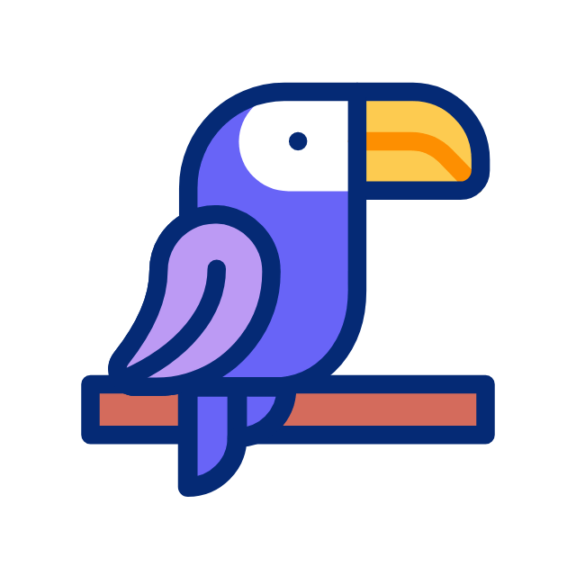

Propostas principais

Conscientização Global
Desenvolver campanhas educativas e de sensibilização para informar o público sobre as consequências da caça ilegal, destacando a importância de preservar a diversidade biológica.

Reabilitação da Vida Selvagem
Apoiar e colaborar com centros de reabilitação de animais selvagens, trabalhando para reintroduzir espécies ameaçadas na natureza e garantir a preservação de habitats naturais.
Monitoramento e Avaliação
Implementar sistemas robustos de monitoramento e avaliação para avaliar o progresso do projeto, ajustar estratégias conforme necessário e garantir a transparência nas operações.

Engajamento Comunitário
Trabalhar de perto com comunidades locais em áreas propensas à caça ilegal, incentivando práticas de conservação e fornecendo alternativas econômicas sustentáveis que não envolvam danos à vida selvagem.